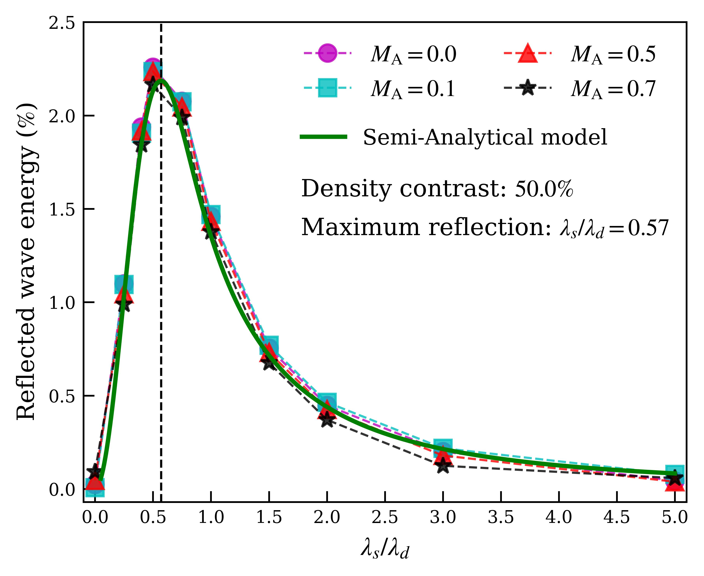
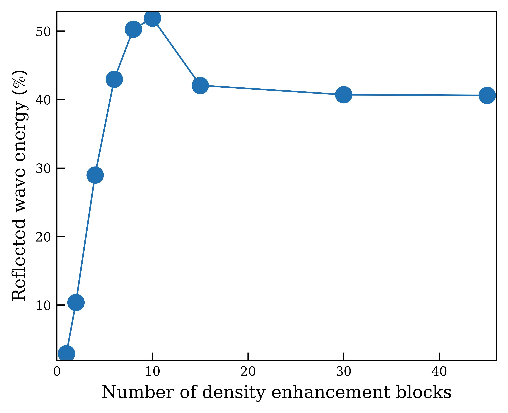

Wave Interference and Energy Trapping in the Solar Atmosphere

The Sun's atmosphere hides within itself several mysteries that have baffled scientists for decades. Two such problems essentially involve energy imbalance. Despite the solar interior being the source of all energy in the heliosphere, the plasma surrouding it appears to be hotter than it should be. Moreover, the plasma that fills the heliosphere – called the solar wind – appears to travel faster despite the Sun's strong gravitational pull. Such observations suggest that there could be an invisible energy source/energy conversion mechanism that powers the solar atmosphere. One of the leading theories for the energisation of the solar atmosphere is by magnetohydrodynamic waves, which are known to efficiently transport energy to large distances. It is likely that these waves are trapped in at appropriate locations where they can dissipate and transfer their energy to the surrounding plasma This work details the conditions at which efficient wave reflections – from imposed density variations – and therefore wave energy trapping can take place, in terms of the different length scales in the system – wavelength $ \lambda_d $ and the density variation length scale $ \lambda_s $.

Although waves can reflect (continuously) from any kind of background density variation (This is generally true for any kind of waves when the background properties, often a function of the density, vary in space), there appears a favourable length scale at which wave reflections maximise. This condition is met when the density structuring length scale is approximately half the wavelength of incident wave ($\lambda_s = \lambda_d/2$). The reason this scale selectivity occurs is due to a way in which waves add up – called wave interference. Waves do not add up like numbers, rather, their relative offset (called the phase) also plays a significant role. If two waves are completely in phase, then their sum is a bigger wave (with a doubled amplitude – four times higher energy); however, if two waves are completely out of phase, the resultant wave energy becomes zero. In other words, if there is no wave at all, it might be possible that there are two individual components that fully cancel each other! It is therefore reflected waves from different locations in a region with density variations interfere constructively or destructively to give yield the resultant reflected wave; the amount of interference depends on the locations from where these reflected waves originate, and therefore on the spatial scale of these background density variations.
We would generally expect the amount of reflections to increase as the number of density enhancement regions increase. However, that is not the case when wave interference effects become important. Although an initial increase in the number of density enhancements does increase the net reflected energy, but it also imparts an offset (phase difference) that determines whether the reflected waves interfere constructively or not. It is only after a finite number of density enhancements that the waves start interfering destructively and we see a decrease in the net reflected energy.
More details about this work could be found here.